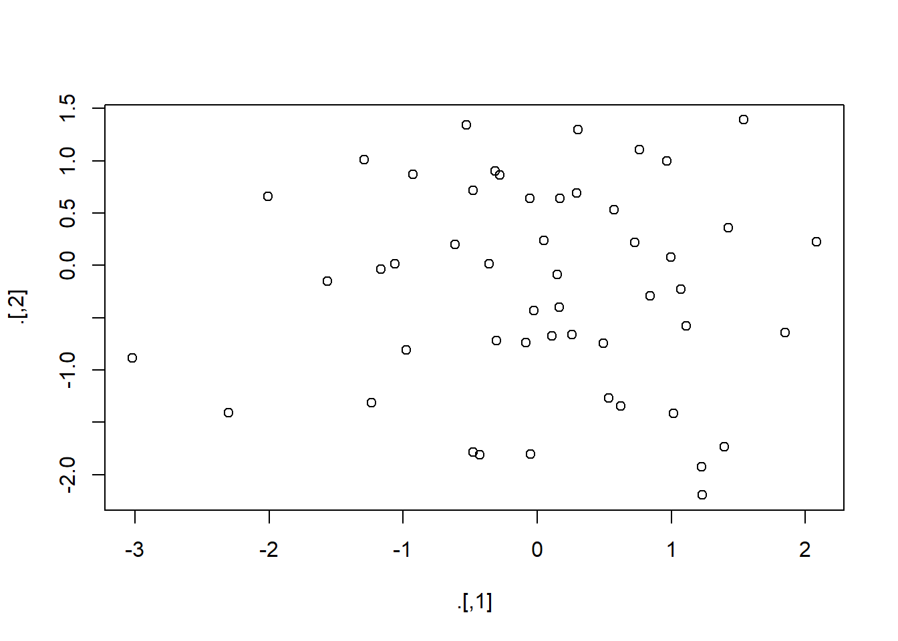

3 Tibbles x Data frames
“Famílias felizes são todas iguais; toda família infeliz é infeliz à sua maneira.” – Leo Tolstoi
O que é um tibble? Tibbles são similares aos data frames, porém diferentes em dois aspectos: impressão e indexação
Na impressão no console, os tibbles apresentam apenas as dez primeiras linhas e todas as colunas que cabem na tela, tornando mais fácil o trabalho com grandes volumes de dados. Além disso, cada coluna apresenta o seu tipo, algo semelhante ao apresentado quando utilizamos a função str(). A segunda diferença, não menos importante, é a forma de indexação. Para indexar um tibble devemos utilizar o nome completo da variável que desejamos. Caso contrário, ocorrerá um erro.
Ainda sobre a indexação, sempre que indexarmos um tibble usando [, o resultado será outro tibble. Usando [[ o resultados será um vetor.
Em síntese, data frames são tabelas de dados. Em seu formato, são bem parecidos com as matrizes, no entanto, possuem algumas diferenças significativas. Podemos idealizar os data frames como sendo matrizes em que cada coluna pode armazenar um tipo de dado diferente. Logo, estamos lidando com um objeto bem mais versátil do que as matrizes e os vetores.
Uma das funções básicas mais importantes para começarmos a trabalhar com data frames é a str(). Essa função dá uma visão clara da estrutura do nosso objeto, bem como informa os tipos de dados existentes.
A função View() chama um visualizador de dados no estilo de planilhas em um objeto R. Semelhante a planilha do excel.
Os argumentos da função são: x um objeto do R que pode ser coagido a um quadro de dados. E title, título para a janela do visualizador. O padrão é o nome de x prefixado.
3.1 O que é Dados organizados?
“Os conjuntos de dados organizados são todos iguais, mas todos os conjuntos de dados confusos são confusos à sua maneira.” – Hadley Wickham
Costuma-se dizer que 80% da análise de dados é gasta no processo de limpeza e preparação os dados (Dasu e Johnson 2003). A preparação de dados não é apenas um primeiro passo, mas deve ser repetidos muitos ao longo da análise, à medida que novos problemas surgem ou novos dados são coletados.Você vai precisar instalar os pacotes tidyr, devtools e DSR. Para instalar tidyr e devtools, abra o RStudio e execute o comando:
DSR é uma coleção de conjuntos de dados. Para instalar DSR, execute o comando:
Os dados tabulares podem ser organizados de várias maneiras. Os conjuntos de dados abaixo mostram os mesmos dados organizados de quatro maneiras diferentes, sendo que possuem as mesmas variáveis: país, ano, população e casos. Mas cada conjunto organiza os valores em forma de layout diferente. Vejamos essas tabelas de dados seguintes:
##
## Attaching package: 'DSR'## The following objects are masked from 'package:tidyr':
##
## population, table1, table2, table3, table5, who## # A tibble: 6 x 4
## country year cases population
## <fct> <int> <int> <int>
## 1 Afghanistan 1999 745 19987071
## 2 Afghanistan 2000 2666 20595360
## 3 Brazil 1999 37737 172006362
## 4 Brazil 2000 80488 174504898
## 5 China 1999 212258 1272915272
## 6 China 2000 213766 1280428583## # A tibble: 12 x 4
## country year key value
## <fct> <int> <fct> <int>
## 1 Afghanistan 1999 cases 745
## 2 Afghanistan 1999 population 19987071
## 3 Afghanistan 2000 cases 2666
## 4 Afghanistan 2000 population 20595360
## 5 Brazil 1999 cases 37737
## 6 Brazil 1999 population 172006362
## 7 Brazil 2000 cases 80488
## 8 Brazil 2000 population 174504898
## 9 China 1999 cases 212258
## 10 China 1999 population 1272915272
## 11 China 2000 cases 213766
## 12 China 2000 population 1280428583## # A tibble: 6 x 3
## country year rate
## <fct> <int> <chr>
## 1 Afghanistan 1999 745/19987071
## 2 Afghanistan 2000 2666/20595360
## 3 Brazil 1999 37737/172006362
## 4 Brazil 2000 80488/174504898
## 5 China 1999 212258/1272915272
## 6 China 2000 213766/1280428583O último conjunto de dados é uma coleção de duas tabelas.
## # A tibble: 3 x 3
## country `1999` `2000`
## <fct> <int> <int>
## 1 Afghanistan 745 2666
## 2 Brazil 37737 80488
## 3 China 212258 213766## # A tibble: 3 x 3
## country `1999` `2000`
## <fct> <int> <int>
## 1 Afghanistan 19987071 20595360
## 2 Brazil 172006362 174504898
## 3 China 1272915272 1280428583R segue um conjunto de convenções que tornam um layout de dados tabulares muito mais fácil de trabalhar do que outros. Seus dados serão mais fáceis de trabalhar no R se seguirem três regras:
- 1.Cada variável no conjunto de dados é colocada em sua própria coluna;
- 2.Cada observação é colocada em sua própria linha;
- 3.Cada valor é colocado em sua própria célula.
Os dados que satisfazem essas regras são conhecidos como dados organizados. Observe que table1 são dados organizados.

Essas três regras estão inter-relacionadas, porque é impossível satisfazer apenas duas das três. Essa inter-relação leva a um conjunto ainda mais simples de instruções práticas:
Coloque cada conjunto de dados em um
tibble;Coloque cada variável em uma coluna.
Em table1, cada variável é colocada em sua própria coluna, cada observação em sua própria linha e cada valor em sua própria célula.
Por que garantir que seus dados estejam organizados? Existem duas vantagens principais:
Há uma vantagem geral em escolher uma maneira consistente de armazenar dados. Se você possui uma estrutura de dados consistente, é mais fácil aprender as ferramentas que funcionam com ela porque elas têm uma uniformidade subjacente;
Há uma vantagem específica em colocar variáveis em colunas porque permite que a natureza vetorizada de R seja eficiente. Você aprenderá nas funções
mutateesummary, a maioria das funções R internas trabalha com vetores de valores. Isso faz com que a transformação de dados organizados pareça particularmente natural.
3.2 Operador pipe %>%

O pacote magrittr tem dois objetivos: diminuir o tempo de desenvolvimento e melhorar a legibilidade e a manutenção do código. Para começar a utilizar o pipe, instale e carregue o pacote magrittr.
##
## Attaching package: 'magrittr'## The following object is masked from 'package:purrr':
##
## set_names## The following object is masked from 'package:tidyr':
##
## extractTubulação básica:
- x
%>%f é equivalente a f(x); - x
%>%f(y) é equivalente a f(x, y); - x
%>%f%>%g%>%h é equivalente a h(g(f(x))).
O operador do pipeline %>% é muito útil para reunir várias funções em uma sequência de operações. Os tubos são uma ferramenta poderosa para expressar claramente as operações. O pipe, %>% vem do pacote magrittr de Stefan Milton Bache. Pacotes no tidyverse carregam %>% automaticamente, para que normalmente não carregue o magrittr explicitamente. Observe abaixo que toda vez que desejamos aplicar mais de uma função, a sequência é ocultada em uma sequência de chamadas de funções aninhadas difíceis de ler, ou seja:
third(second(first(x)))
Esse aninhamento não é uma maneira natural de pensar em uma sequência de operações. O %>% permite que você encadeie operações da esquerda para a direita, ou seja:
first(x) %>% second() %>% third()
Por exemplo:
## [1] 3.3 1.8 1.6 0.5 0.3 0.1 48.8 1.1## [1] 3.3 1.8 1.6 0.5 0.3 0.1 48.8 1.1Em resumo, aqui estão quatro razões pelas quais você deve usar tubos ou pipe no R:
Estruturara a sequência de suas operações de dados da esquerda para a direita, ao contrário de dentro para fora;
evita chamadas de função aninhadas;
minimiza a necessidade de variáveis locais e definições de funções;
facilita a adição de etapas em qualquer lugar da sequência de operações.
Mesmo sendo %>% o operador de tubulação (principal) do pacote magrittr, existem alguns outros operadores que fazem parte do mesmo pacote:
Ao trabalhar com tubos mais complexos, às vezes é útil chamar uma função por seus efeitos colaterais. Talvez você queira imprimir o objeto atual, plotá-lo ou salvá-lo em disco. Muitas vezes, essas funções não retornam nada, efetivamente encerrando o pipe.
Para contornar esse problema, usar-se o tubo “tee”. %T>% funciona como %>% exceto que retorna o lado esquerdo em vez do lado direito. É chamado de “tee” porque é como um tubo em forma de T literal.
## NULL
## num [1:50, 1:2] -0.4813 0.4946 -0.0852 -1.5671 0.7604 ...Para mais informações sobre o pipe, outros operadores relacionados e exemplos de utilização, visite a página Ceci n’est pas un pipe. Ou consulte a vinheta do pacote vignette("magrittr").
3.3 Breve Introdução ao tidyr

O pacote tidyr tem como principal objetivo transformar um data frame para o formato tidy, ou limpo.
De acordo com as regras ditas anteriormente, um dado limpo/organizado é aquele com formato long, ou seja, com mais linhas. O outro formato é chamado de wide, com mais colunas. No caso deste exemplo, ano é uma variável, logo é necessário existir uma coluna com os valores de ano. O valor relacionado a UF naqueles anos também é outra variável, então precisa de uma coluna pra representá-lo. Além disso, a própria UF precisa de uma coluna.
O tidyr possui duas funções principais:
gather = amontoar: Transforma um tibble wide em long, ou seja, transforma os dados no formato tidy.
spread = esparramar: Transforma um tibble long em wide, ou seja, transforma dados que estão no formato tidy em formato não tidy.
Além disso, existem duas funções que podem ser importantes na nossa análise: separate e unite, que separa uma coluna em duas e vice versa.
Utilizando o conjunto de dados storms do pacote EDAWR, que descreve a velocidades máximas do vento para seis furacões no Atlântico.
##
## Attaching package: 'EDAWR'## The following object is masked from 'package:DSR':
##
## population## The following object is masked from 'package:dplyr':
##
## storms## The following objects are masked from 'package:tidyr':
##
## population, who## storm wind pressure date
## 1 Alberto 110 1007 2000-08-03
## 2 Alex 45 1009 1998-07-27
## 3 Allison 65 1005 1995-06-03
## 4 Ana 40 1013 1997-06-30
## 5 Arlene 50 1010 1999-06-11
## 6 Arthur 45 1010 1996-06-17Como você pode ver, toda variável (nome da tempestade, vento, pressão, data) tem sua própria coluna e toda observação é salva em sua própria linha.
Como você pode ver, toda variável (nome da tempestade, vento, pressão, data) tem sua própria coluna e toda observação é salva em sua própria linha.
## country 2011 2012 2013
## 1 FR 7000 6900 7000
## 2 DE 5800 6000 6200
## 3 US 15000 14000 13000O conjunto de dados cases têm três variáveis: o código do país em cada linha, o ano em cada coluna e uma contagem para cada combinação de linha e colunas. Como você pode ver, essa estrutura não está em conformidade com as características de um conjunto de dados organizado mencionado acima.
Vamos dar uma olhada em outro exemplo de um conjunto de dados não arrumado chamado poluição:
## city size amount
## 1 New York large 23
## 2 New York small 14
## 3 London large 22
## 4 London small 16
## 5 Beijing large 121
## 6 Beijing small 56Aqui temos três variáveis: nomes de cidades, quantidade de partículas pequenas e quantidade de partículas grandes que cada cidade possui (indice de qualidade do ar). Novamente, isso não está em conformidade com as características de um conjunto de dados organizado. A próxima figura resume graficamente a estrutura dos três conjuntos de dados:
3.4 Função gather()
Se procurarmos a documentação para esta função, podemos encontrar: “usa o gather() quando percebe que possui colunas que não são variáveis.” Esta declaração se aplica ao conjunto de dados cases descrito acima. Então, vamos tentar arrumar usando a gather(). A função gather() retorna um tibble com duas colunas, por padrão, isso se não inserirmos nenhum parâmetro além do tibble.
O resultado é um quadro de dados organizado com três colunas, onde cada coluna representa uma variável e cada obeservação é salva em sua própria linha.
3.5 Função spread()
A segunda função principal do tidyr é spread(). Esta função pega dados que estão em um formato de valor-chave e retorna um formato retangular de célula organizada. Isso pode parecer confuso, então vamos aplicar esta função no quadro de dados de poluição para ilustrar sua funcionalidade:
Como você pode ver, spread() reestrutura o quadro de dados removendo linhas redundantes sem perder nenhuma informação.
Duas outras funções úteis são unite() e separate(). Para mostrar seu uso, vamos olhar o quandro de dados storms novamente:
## storm wind pressure date
## 1 Alberto 110 1007 2000-08-03
## 2 Alex 45 1009 1998-07-27
## 3 Allison 65 1005 1995-06-03
## 4 Ana 40 1013 1997-06-30
## 5 Arlene 50 1010 1999-06-11
## 6 Arthur 45 1010 1996-06-17separate() pode ser usado para separar uma coluna em várias outras colunas usando um separador. Digamos, por exemplo, que, em vez do formato de data AAAA-MM-DD que esta no storms e em uma única coluna, desejemos três colunas separadas: uma com o ano, uma com o mês e outra com o dia. Isso pode ser alcançado com o seguinte comando:
unite() faz exatamente o oposto. Ele une várias colunas em uma única coluna. Isso pode ser demonstrado usando nosso novo quadro de dados:
## # A tibble: 6 x 4
## storm wind pressure date
## <chr> <int> <int> <chr>
## 1 Alberto 110 1007 2000-08-03
## 2 Alex 45 1009 1998-07-27
## 3 Allison 65 1005 1995-06-03
## 4 Ana 40 1013 1997-06-30
## 5 Arlene 50 1010 1999-06-11
## 6 Arthur 45 1010 1996-06-173.5.1 Exercícios
- 1.Qual a diferença entre uma matriz e um data frame no R?
- 2.Os data frames podem ser indexados com a mesma sintaxe utilizada para matrizes?
- 3.Qual função básica que utilizamos para verificar a estrutura dos dados de um data frame?
3.5.2 Exercícios
- Reescreva a expressão abaixo utilizando o
%>%.
- Reescreva a expressão abaixo utilizando o
round(mean(sum(1:10)/3), digits = 1)
Dica: utilize a função magrittr::divide_by(). Veja o help da função para mais informações.
- Reescreva o código abaixo utilizando o
%>%.
- Reescreva o código abaixo utilizando o
x <- rnorm(100)
x.pos <- x[x>0]
media <- mean(x.pos)
saida <- round(media, 1)
- Sem rodar, diga qual a saída do código abaixo. Consulte o
helpdas funções caso precise.
- Sem rodar, diga qual a saída do código abaixo. Consulte o
2 %>%
add(2) %>%
c(6, NA) %>%
mean(na.rm = T) %>%
equals(5)